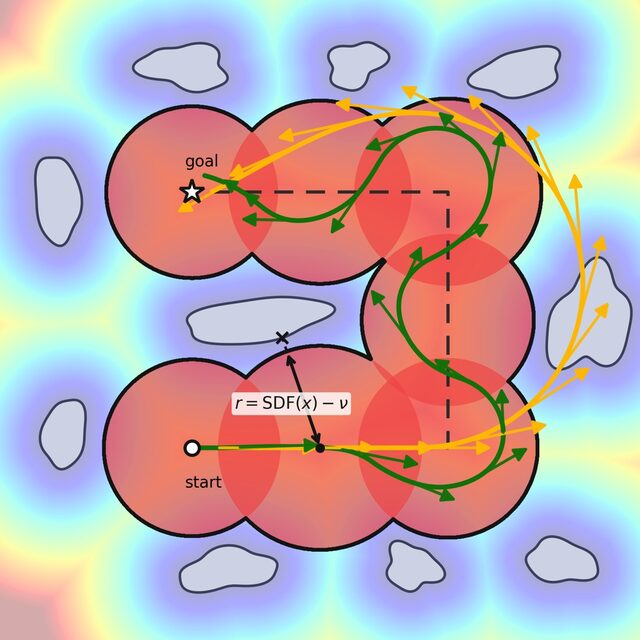
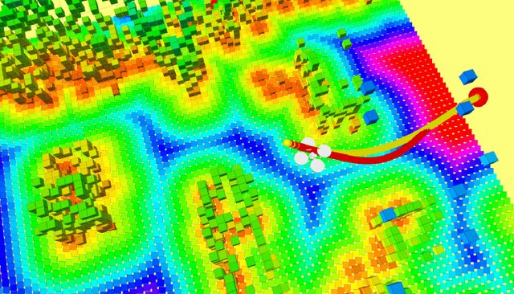
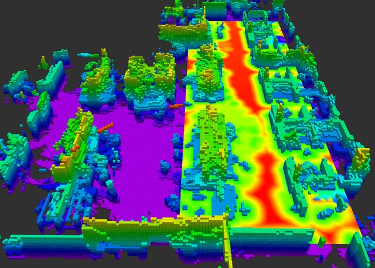
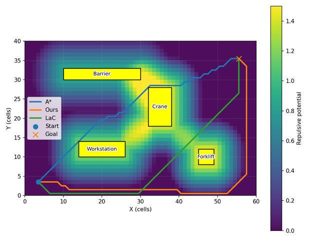
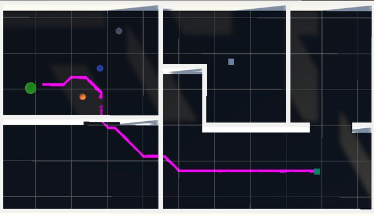
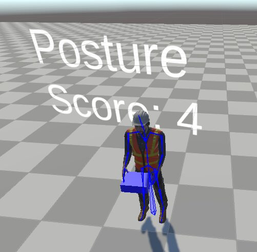
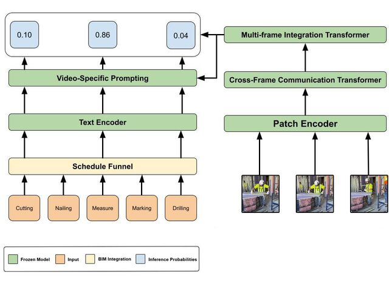

Research Interests
I study how robots can plan safe, useful actions when geometric collision checks alone are insufficient. My work develops ways to represent and satisfy higher-dimensional constraints involving robot state, task context, and people, including ergonomic risk in human-robot interaction. I use semantic scene representations, control barrier functions, language-guided planning, latent world models, and learning-based methods to bring these constraints into robot decision-making.
Experience
Autonomy Engineer Intern · Michael Baker International
Pittsburgh, PA · Jun. 2026–Sep. 2026
Extended VidMap’s structure-from-motion pipeline with multi-camera bundle adjustment, IMU-based gravity alignment, and support for fisheye and equirectangular cameras. Increased reconstruction acceptance rates from 40% to 85% on large buildings, including schools and stadiums. Also developed open-vocabulary asset extraction and dynamic Gaussian splatting methods.
AI Engineer Intern · AstreaX
Phoenix, AZ · Jun. 2025–Sep. 2025
Built a vision pipeline for low-light maritime hazard detection, including synthetic data generation and a custom deformable transformer model that achieved an 87.8% F1 score on held-out tests.
Research Assistant · SDSU & UC San Diego
San Diego, CA · Jun. 2023–Present
Develop robot planning, semantic mapping, and safety methods using language models, building information models, and ROS 2. I also mentor undergraduate researchers working on robot autonomy.
Software Engineering Intern · San Diego Zoo Wildlife Alliance
San Diego, CA · Oct. 2024–Present
Develop computer vision and sensor-data pipelines for wildlife monitoring, including detection of burrowing owls, bats, and potential predators.
Publications
In Progress

BubbleCBF: Constructive Safety for Second-Order Systems and Application to Autonomous Robot Navigation in Unknown Environments
M. Amani*, M. Alyaseen*, Z. Dai, K. M. B. Lee, N. Atanasov, and J. Cortés
Under review, 2026 (*equal contribution)
Published
2026

Digital Twin-Guided Robot Path Planning: A Beta-Bernoulli Fusion with Large Language Model as a Sensor
M. Amani and R. Akhavian
Journal of Computing in Civil Engineering, 2026To appear

Kernel-SDF: An Open-Source Library for Real-Time Signed Distance Function Estimation using Kernel Regression
Z. Dai, T. Fan,
M. Amani, J. Seo, K. M. B. Lee, H. Oh, and N. Atanasov
IEEE Robotics and Automation Letters (RA-L), 2026
Automation in Construction
2026
Semantic-Gravity Iterative Closest Point and AI-assisted navigation for Robot-Ready Construction Digital Twins
R. Akhavian,
M. Amani, J. Mootz, B. Beheshti, and R. Ashe
Automation in Construction, 190, 107134, 2026

Bootstrapped LLM Semantics for Context-Aware Path Planning
M. Amani, B. Beheshti, and R. Akhavian
ASCE International Conference on Computing in Civil Engineering (i3CE), 2026
2025

Safe and Trustworthy Robot Pathfinding with BIM, MHA*, and NLP
M. Amani and R. Akhavian
Construction Robotics, 9, article 18, 2025
Computing in Civil Engineering
2025
A Customized Quadruped Control and Sensor Integration Framework with a Construction Worker Activity Recognition Module
R. Ashe,
M. Amani, C. Sommerfield, and R. Akhavian
Computing in Civil Engineering 2025, 708–712
2024

Intelligent ergonomic optimization in bimanual worker-robot interaction: A Reinforcement Learning approach
M. Amani and R. Akhavian
Automation in Construction, 168, 105741, 2024
Int. Journal of Bifurcation and Chaos
2024
Disorder-Induced Dynamics in Complex Networks
A. Palacios, V. In, and
M. Amani
International Journal of Bifurcation and Chaos, 34(5), 2430010, 2024

Adaptive Robot Perception in Construction Environments Using 4D BIM
M. Amani and R. Akhavian
Computing in Civil Engineering 2024, 679–687
Honors & Awards
- SDSU University Graduate Fellowship (UGF) (2026–2028)
- ARCS Foundation Scholar (Achievement Rewards for College Scientists) (2026–2027)
- NSF S-STEM ASSICS Scholarship, SDSU (2023–2025)
- San Diego Zoo Wildlife Alliance & San Diego Foundation Fellowship (2024)
- Runner-up Poster Award, SDSU Graduate Research Symposium (2025)
- Best Poster Award, SDSU Graduate Research Symposium (2024)
- Provost Honors, UC San Diego (2018, 2020)